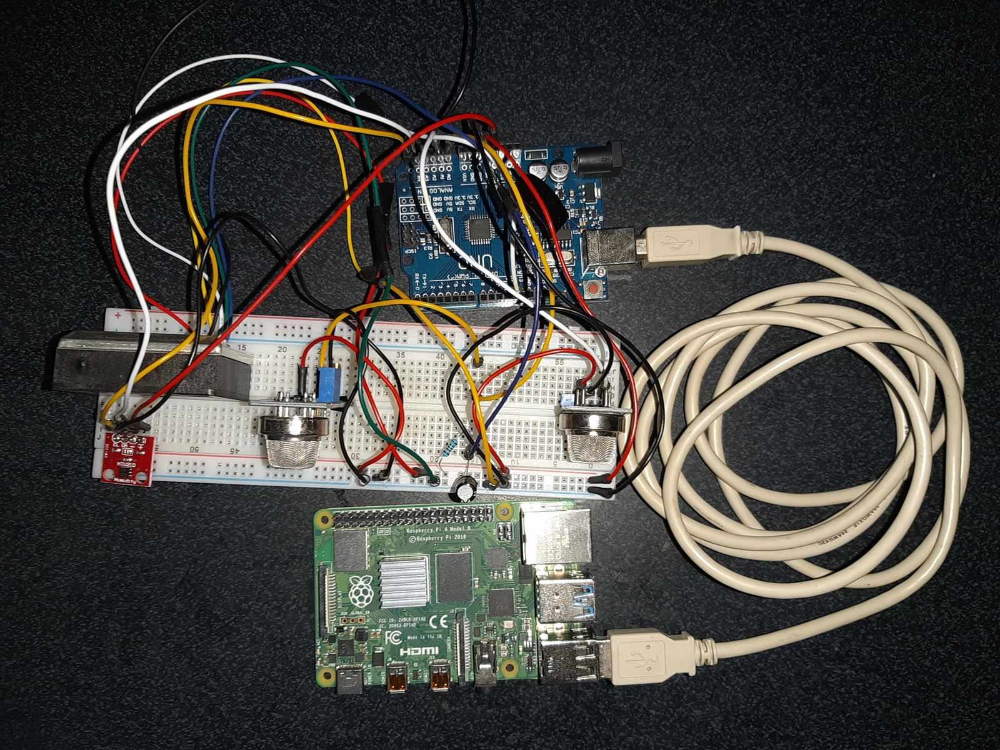

Acesta este cel mai mare proiect la care am lucrat și unde mi-am pus toate cunoștințele mele fiind necesar chiar să învățat și alte limbaje de programare. A fost și lucrarea mea de licență. A început de la ideea de a știi când trebuie sa ventilez camera și cât de mult trebuie ventilată pentru a beneficia de aer proaspăt. Am început să studiez în mai îndeaproape acest subiect și apoi am început să îmi pun toate ideile pe hârtie. Am ajuns la ideea că cei mai importanți parametri sunt temperatura, umiditatea, praful și nivelul de CO2.

Am găsit un senzor care poate măsura umiditatea și temperatura HTU21D, având o precizie mare și o varietate largă de valori. Pentru praf am utilizat GP2Y1010 care folosind principiile optici detectează densitatea de praf din încăpere, conține un LED cu infraroșu și o fotodiodă plasate diagonal. Dacă la intersecția celor două apar particule de praf lumina infraroșie este refractată și detectată de fotodiodă. Și pentru detectarea gazelor din aer am folosit doi senzori MQ-135 și MQ-2 care au sensibilități la diferite tipuri de gaze.
Inițial pentru achiziția de date voiam să utilizez Raspberry PI4 pentru că aveam nevoie să am acces la date de pe telefon. Dar am întâmpinat o problemă, majoritatea senzorilor erau analogici și aveam nevoie de niște convertoare analog-digitale, dar nu am mai vrut să mai cheltuiesc alți bani și nu mai aveam nici timp așa că am utilizat un Arduino UNO. Am programat Arduino pentru a face achiziția de date și să le trimită prin USB la Raspberry PI prin USB. Pentru Raspberry am scris un script care să deschidă comunicare serială pentru a colecta datele, am adăugat data și ora la care au fost primite valorile, după ce datele au fost colectate au fost clasificate și apoi trimise către Firebase care este o bază de date.
Pentru că am vrut să am acces ușor la date, am creat o aplicație Android în Android Studio, și am utilizat Java ca limbaj de programare. Aplicația are pe prima pagină afișate toate valorile care au fost colectate ultima dată și statusul calității aerului. Pentru a vedea valorile din ultimele zile, am creat alte pagini care conțin grafice cu fiecare parametru pe o perioadă de trei zile.
Acest proiect m-a scos din minți uneori pentru că am întâmpinat multe probleme. Când am încercat sa fac paginile cu grafice nu arătau corect data și ora. Am început să fac depanare la cod am observat o funcție care schimba aleatoriu valorile pentru dată și oră după ce am mai căutat pe internet despre aceea funcție am aflat că este necesar ca data și ora să fie în milisecunde și programul meu inițial trimitea data și ora într-un format clasic. După ce am finalizat aplicația a mai intervenit o probleme, valorile de pe grafice erau prea multe și după câteva zile ajungeau să fie ilizibile. Așa că am creat o funcție care să șteargă din baza de date valorile mai vechi de trei zile.